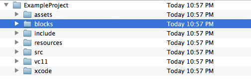

TinderBox
TinderBox is an application included with Cinder that simplifies the creation of new projects. It can create both Xcode and Visual Studio projects. It can also integrate CinderBlocks (prepackaged libraries for use with Cinder) into your application.
Launching TinderBox
On OS X, TinderBox is located at Cinder/tools/TinderBox-Mac/TinderBox.app. On Windows it's located at Cinder/tools/TinderBox-Win/TinderBox.exe
Basic Usage
After launching TinderBox you'll see a screen like this:

Template
This field allows you to select the kind of project you want to create. The defaults include a Basic OpenGL application, a Screensaver or a Mac-specific project type Cocoa OpenGL, which allows simple integration of a Cocoa user interface with a Mac application.
CinderBlocks can also optionally supply project templates, which can serve as a jumpstart specific to it.
Project Name
Here you enter the name of your project, with no spaces. This field will affect the names of the files TinderBox outputs, and will also be integrated into the automatically generated source code.
Location
This is the destination path where your project will be created. In the example in the screenshot, a new project would be created at /Users/andrewfb/tmp/ExampleProject.
Cinder Version
This is the version of Cinder which the project will be compiled against. Advanced users can point TinderBox at multiple installations of Cinder on one machine, which is possible via the Settings... button in the TinderBox main window.
Environment
This toggle allows you to select which types of compiler/platform combinations you'll be targeting. Options include OS X or iOS via Xcode, as well as the 2013 versions of Visual C++.
Create local git repository
When enabled this causes TinderBox to automatically create a local git repository for your project. This options requires git to be accessible in your system's path.
After setting the fields appropriately click the Next button.
CinderBlocks
CinderBlocks are prepackaged libraries of code designed to interoperate with Cinder. You can read more about them in this document.
TinderBox can include CinderBlocks in your application:

The list on the left will reflect which CinderBlocks are available in the currently selected version of Cinder's blocks directory. Single-clicking a block will reveal details on the right. To include a CinderBlock in your application, select one of the installation types from the Install menu:

| Copy: | The contents of the CinderBlock are copied to a project-local blocks folder. |
| Relative: | The project's paths are setup relative to where the CinderBlock exists on disk. No files are copied. |
| Git Submodule: | The CinderBlock is added to the project as a git submodule.
|
The best style of installation for a CinderBlock is largely a function of disk/repository space requirements, project maintainability and interoperability with other developers. When in doubt, select Copy.
The Copy install type is the least efficient in terms of disk and repository size as a complete copy of all files are added to the project repository (in a local blocks directory). However it is the simplest solution in terms of guaranteeing that all necessary files are in a predictable location.
The Relative install type has a size advantage in that no files are copied or added to a repository. However it expects all developers to have a copy of the CinderBlock in the same place (generally a Cinder installation's blocks folder). This is often a reasonable expectation however, particularly when using one of Cinder's built-in blocks like QuickTime.
The Git Submodule install type is only available when a user has chosen to setup a git repository for the project, and when the CinderBlock itself has a git repository associated with it. However in these circumstances, a git submodule can be ideal. It requires no additional space in the project repository (which can be important with a large CinderBlock such as OpenCV, which has hundreds of megabytes of binaries). However a submodule still marks a formal dependency which can be tracked and changed to point at newer versions of a CinderBlock as it and the dependent project evolve.
Completion
After you've selected any CinderBlocks you'd like included with your project, click the Finish button. The Mac Finder or Windows Explorer will automatically open to the path of your newly created project. Note that a blocks folder will have been created if you have chosen to install any CinderBlocks.
